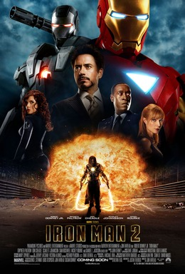

Phase 1
Первая фаза MCU знакомит зрителей с главными героями и постепенно объединяет их в команду Avengers. Именно здесь начинается большая история кинематографической вселенной Marvel.

Iron Man
Тони Старк создаёт высокотехнологичный костюм и становится Железным человеком.

The Incredible Hulk
Брюс Бэннер пытается контролировать свою силу и превращение в Халка.

Iron Man 2
Тони Старк сталкивается с новыми противниками и последствиями своей популярности.

Thor
Асгардский принц Тор оказывается на Земле и учится быть настоящим героем.

Captain America: The First Avenger
Стив Роджерс становится суперсолдатом и сражается во время Второй мировой войны.

The Avengers
Железный человек, Капитан Америка, Тор, Халк и другие герои впервые объединяются в одну команду.